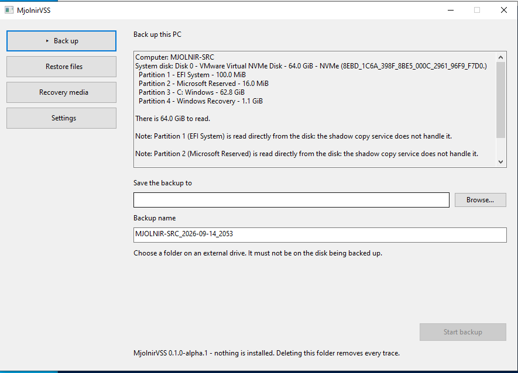
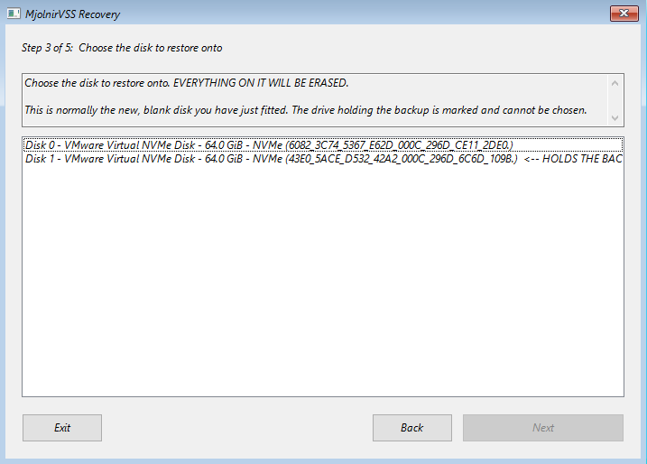
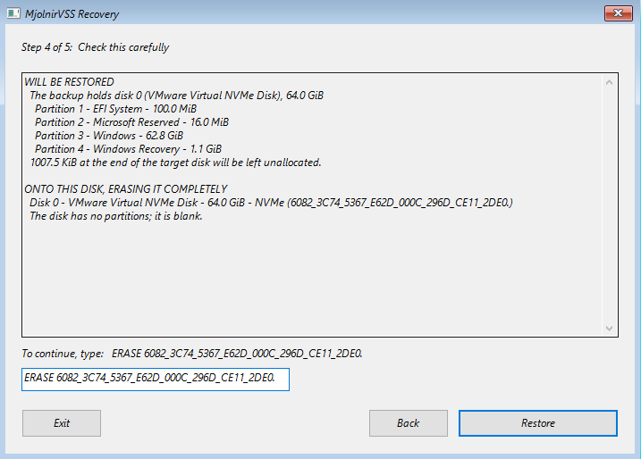
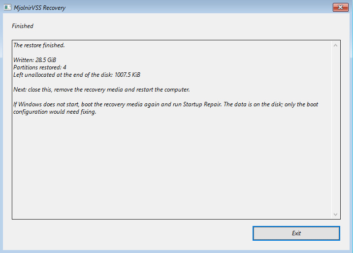

A backup taken live
Microsoft's Volume Shadow Copy Service freezes the disk for the instant it takes to start a snapshot. The copy is read from that frozen view, so the machine stays usable.
Windows 10, Windows 11 and Windows Server 0.1.0-alpha.1
MjolnirVSS takes an image of a Windows system disk while Windows is running, and writes it back onto a blank replacement disk after the original has failed.
No installer, no service, no driver, no runtime. Download, extract, run. Deleting the folder removes every trace.

What it does
Microsoft's Volume Shadow Copy Service freezes the disk for the instant it takes to start a snapshot. The copy is read from that frozen view, so the machine stays usable.
The partition table, the EFI system partition, the Microsoft Reserved partition, Windows and the recovery partition. If one cannot be read the backup fails, rather than quietly producing a disk that will not start.
MjolnirVSS asks the filesystem which clusters are in use and reads only those. On one measured machine that was 2.9 million clusters out of 16.5 million.
Every stored block is read back, decompressed and checked against its BLAKE3 digest. Only then is the completion marker written, so an interrupted backup never looks usable.
Argon2id and AES-256-GCM, from RustCrypto, used in documented ways. The password is never stored and never accepted as a command line argument. Lose it and the backup is lost.
A backup is a plain folder of JSON and compressed blocks. The format is documented in enough detail to write an independent reader.
When the disk has failed
MjolnirVSS builds its own bootable recovery media out of the Windows recovery parts the computer already has. Nothing belonging to Microsoft is shipped or downloaded. Build it before you need it: a computer that will not start cannot build its own rescue disc.


y.
The wizard works from the keyboard alone, which matters in Windows PE on a machine whose mouse may not be the thing that still works.
What has actually been run
Backed up live, verified, files recovered by hash, restored onto a blank disk from the recovery wizard, started, and then checked against what went in. All four were virtual machines.
| Operating system | Build | Backup | Stored | Restored | Booted |
|---|---|---|---|---|---|
| Windows 10 22H2 | 19045 | 209 s | 4.75 GB | 14.5 GiB | unaided |
| Windows 11 24H2 | 26100 | 884 s | 18.28 GB | 28.5 GiB | unaided |
| Windows Server 2019 | 17763 | 166 s | 4.44 GB | 14.6 GiB | unaided |
| Windows Server 2025 | 26100 | 478 s | 6.10 GB | 11.7 GiB | unaided |
Every restored machine matched 12 of 12 test file hashes, kept every partition's type, identifier, offset and size, and still had the Windows Recovery Environment registered. Windows Server 2022 sits between the two servers that were tested and has not been run.
On a server
MjolnirVSS images a disk. It cannot restore a single database and keeps no backup history, so it has no business claiming a full backup and does not.
The limits
MjolnirVSS refuses what it has not been built and tested for, rather than attempting it and producing a backup that turns out not to work. Every refusal explains itself.
Every result here is from a virtual machine. Firmware differs, disks differ, and a virtual NVMe disk is not a Samsung one.
Machines that boot in legacy BIOS mode, and disks with a master boot record, are refused. Windows 7 and 8.1 are not supported.
Data on other disks is not captured, and MjolnirVSS names those disks so you know. Storage Spaces, dynamic disks and software RAID are refused.
Not started, deliberately, until the above is solid.
A shadow copy presents an unlocked volume decrypted, so the backup holds readable data and a restored disk is unencrypted. Turn BitLocker on again afterwards.
This has not been looked at by anyone but its author. Standard primitives used in documented ways is the floor, not a substitute.
0.1.0-alpha.1 and has not been published.
The way to find out whether it works for your machine is to restore one of its backups onto a spare disk, or into a
virtual machine, and see whether Windows starts. Until you have done that, keep whatever backup you were using before.